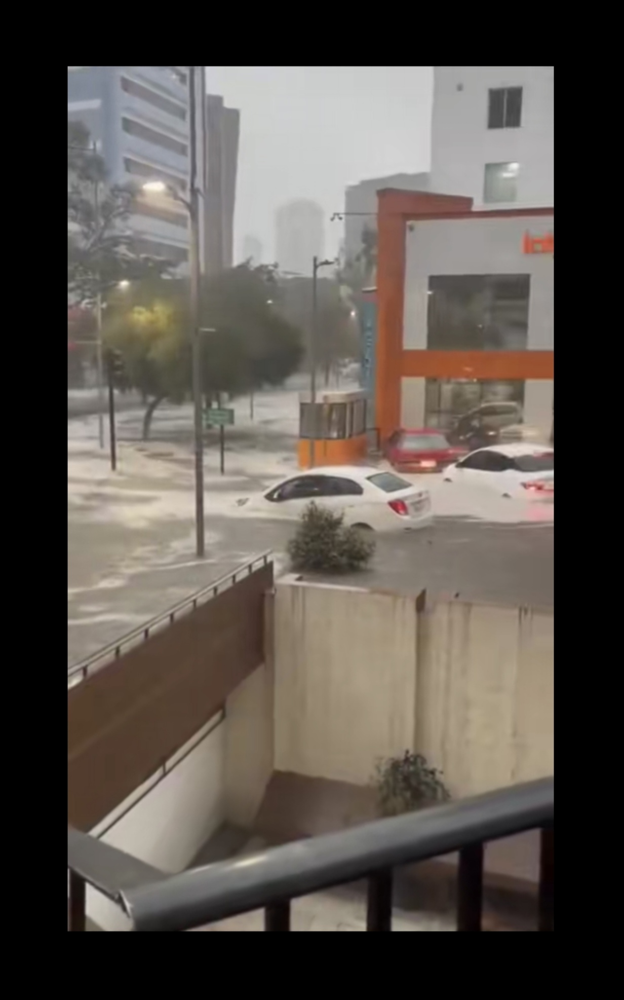
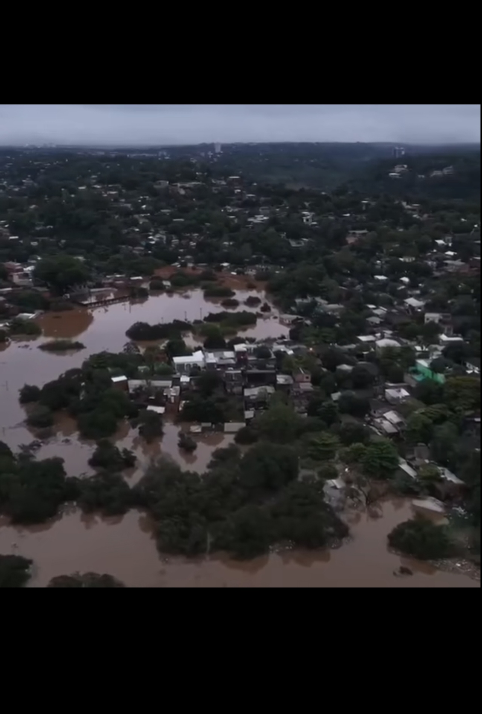
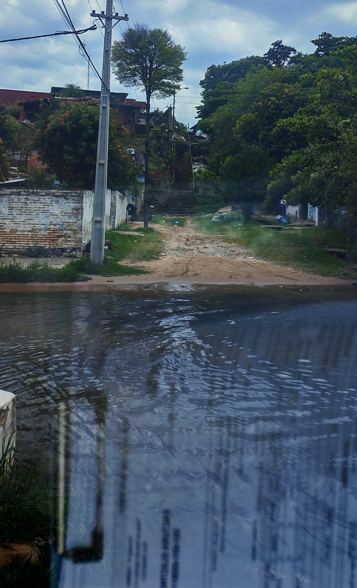

Galería de imágenes satelitales y climáticas
Registro visual de monitoreo atmosférico, sistemas climáticos y condiciones regionales.




Registro visual de monitoreo atmosférico, sistemas climáticos y condiciones regionales.


